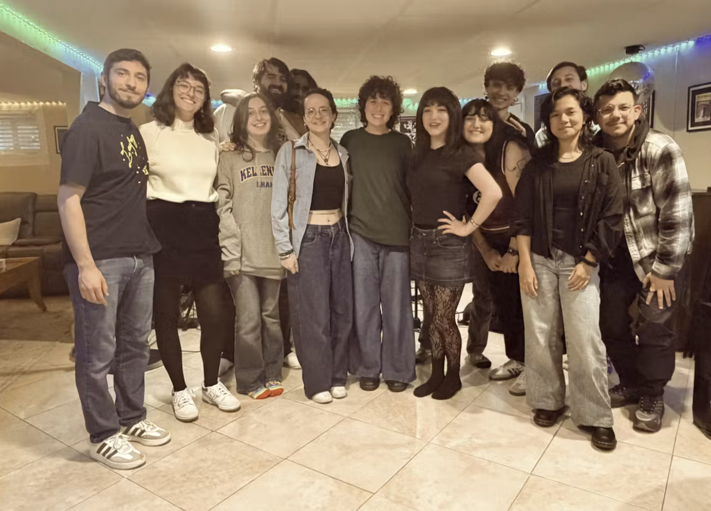
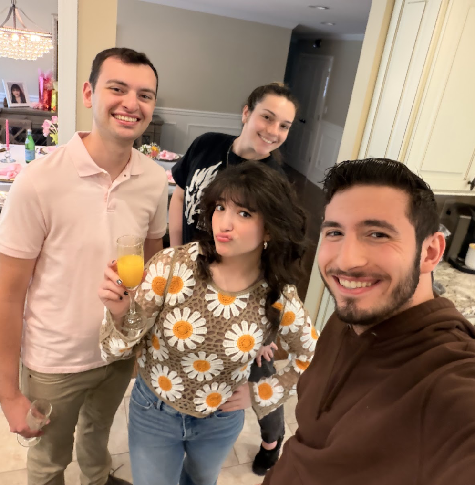
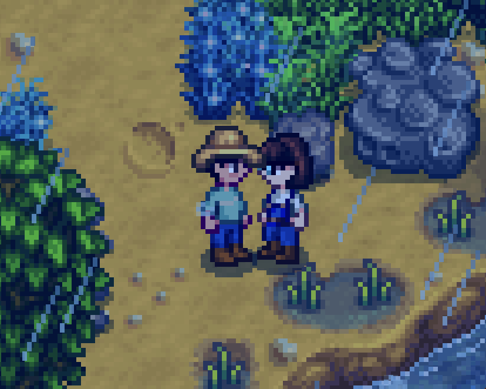

May
Hey, it’s blog post Tuesday (Thursday, it was a holiday weekend and this post took a while to write, c’mon)! Let’s talk about May, Dearest Readers.
First, Music...

The Kiss and Tell Show is out! It was a wonderful project to create. I’m already back on my writing board, so if this release wasn’t your speed or you’re already waiting for more, fret not! My next work is coming!
I already spent last entry talking about why it meant a lot to me. I'll be doing a special entry today too about each of the individual songs, just to make up for posting late. Thanks for listening and sharing if you’ve done those things, seriously... It means a lot to me :) We had a little album release party and it rocked.

Also, my bandcamp will have new merch on it soon, like Kiss and Tell Show CD’s! Maybe Posters! Signed by ME! Check those out like next week-ish :)
Fun music related stuff:
May

may gallery
Next order of business: May has been a wonderful month. I’ve spent a great deal of it on my musicianship once again, which is always great. I feel very in-tune with my artistry and myself at large. I’ve started consistent therapy again, which is never easy to do from scratch but I’m proud of myself!
I’ve spent a lot of time with friends, family, and my lover alike. From that album release party (which was totally just an excuse to hang out), to late-night photoshoots, walks/parks/movies, record stores, catching up at parties, throwing on “In Rainbows” and talking about life, my folks (collective) have really been around lately.
Allow me to continue being the sap I am and say I am really grateful to have some awesome folks around. I wonder what I’d do half these days if it wasn’t for some really rad people. I love you all!
I Watched La La Land.
here’s to the fools who dream...
I should preface this with the fact that I know I’m late.

Natasha has been putting me on some PEAK lately, and I must say that the epitome of this has been “La La Land.” Holy cinema I cannot believe I didn’t watch this damn movie sooner.
Note: Spoilers ahead likely, just putting that out there though again I know this movie is 10 YEARS OLD?!
So first of all I love the music. That goes without saying. I’ve heard some opinions that the singing/dancing is meh depending on who you’re talking to?? I say ‘nah.’ it’s Ryan Gosling and Emma Stone, dude. C’mon. They had so much fun with this (except for the part that ISN’T much fun, but we’ll get to that in a second), and it’s contagious. The MOTIF FOR SEB AND MIA HOLY BRINGS A TEAR TO MY EYE
I will be learning to play it on piano and I will be uploading a cover of it to this blog/my youtube at least.
And let’s not get started about the final sequence. Like as in let’s actually not get started on this because you can’t just SHOW ME THEIR ENTIRE LIVES TOGETHER WHAT THE FUUUUU-
(my letterboxd btw if you want to follow me on my journey to become film bro)
SPEAKING OF LETTERBOXD...
Wax has its own mobile app now!

You should check it out, make an account, and have some fun telling me how to make it even cooler than it already is! All it’s missing now is YOU!
Did somebody say farming?

I’m Stardewing!
Or I should say we’re stardewing! (guess who we is hehe)
I played stardew valley a little while ago and found it kinda fun, but I wasn’t doing a lot of the work so I didn’t get much into it. This time is DIFFERENT! This game is so fun I really like the fishing. I have the feeling that I’m gonna grind the SHITTTTT out of the mines.
More on this as it develops. We are in our first spring, and we just got a bunch of strawberry seeds from the Egg Festival. #fuckJojaAmazon. Also we have a orange cat named GUMBUS and hes the #goat.
Finally,
I’m wondering what cool new things I can do with this blog to make it more interactive! I’d love to know about what y’all like/dislike about this thing, because that’s what’s gonna make it more fun :)
That’s all for now. Check out the Kiss and Tell Show, have a wonderful weekend, tip your baristas and waitresses, and I’ll see you Tuesday!
...
For real this time!
...
Probably. Y’all know how I am.
Y’all rock!!! Love y’all!!! Happy almost June!!! :)
~Luca